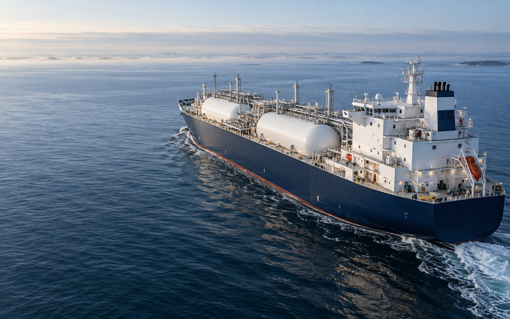

03 / Recognise it on board
From the diagram
to the real vessel.
Make the connection between a simplified drawing and what you see on board.
- 01Recognise the shape.
Look for the main equipment. - 02Connect the views.
Return to the diagram and compare.
A longer explanation adds context to the same idea. This preview keeps the original font size so you can see whether the available space still supports the content comfortably.

ON BOARD / VISUAL CONTEXT